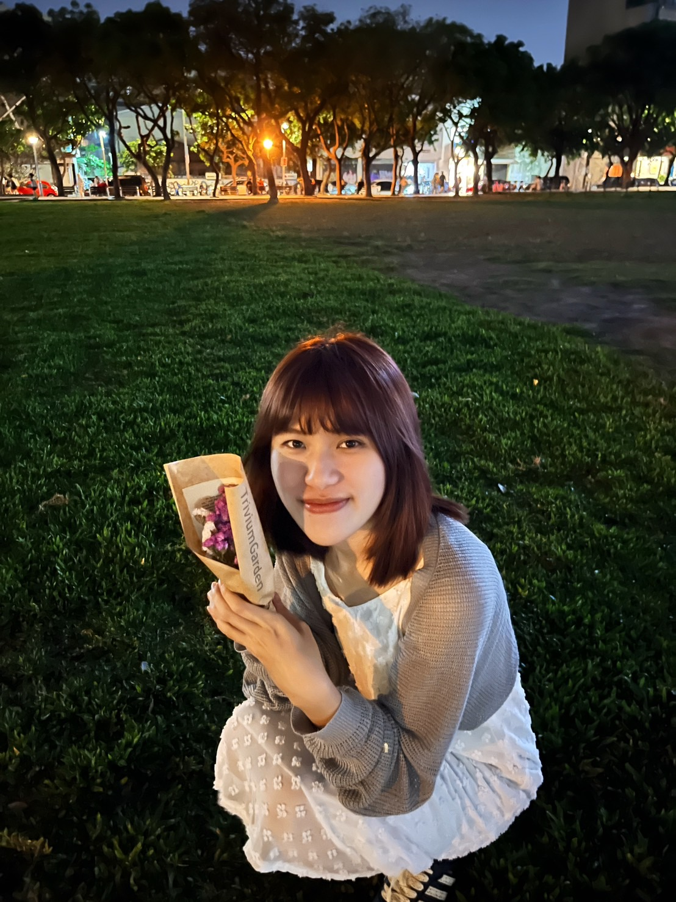
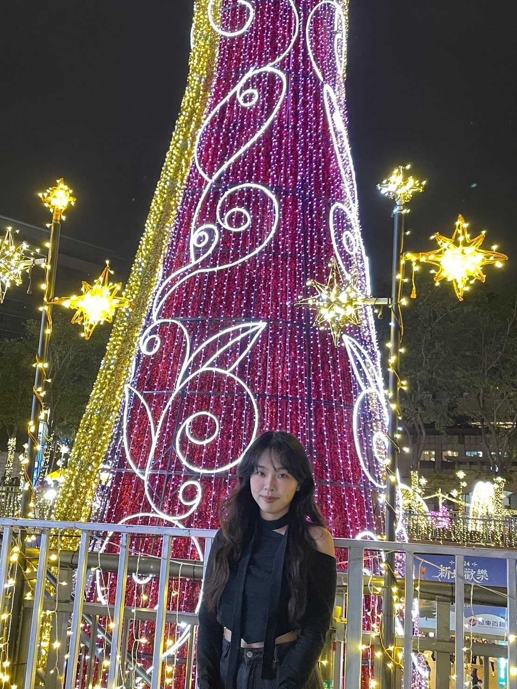
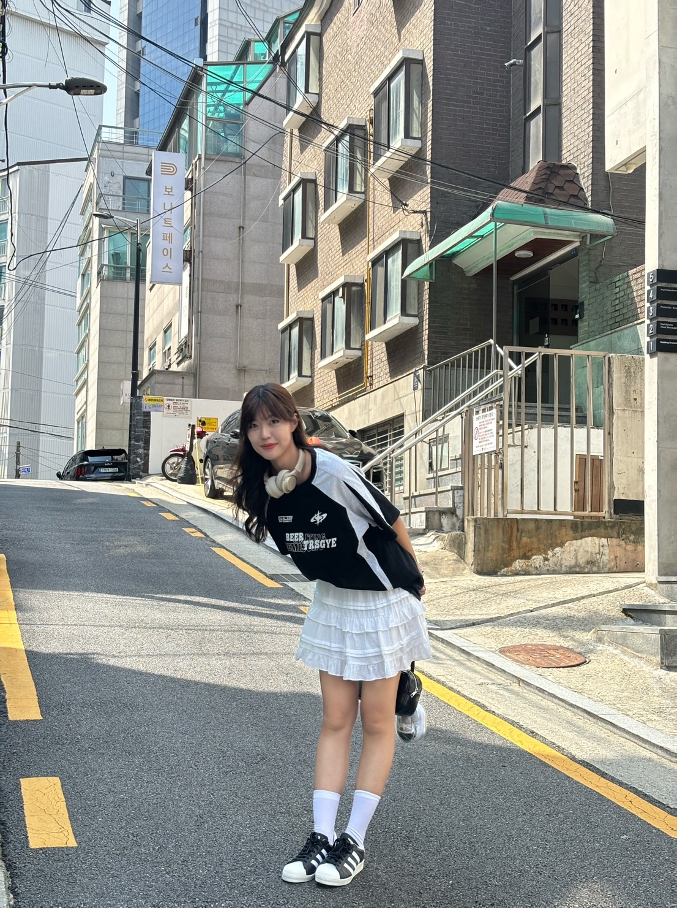

劉欣柔
「看劇時淚水潸然的人，隨著每個溫暖的瞬間與勇敢的選擇，心中充滿感動——The Gentle Soul。」
我最喜歡的作品是《進擊的巨人》和《東京喰種》，每當聽到那偉大的OP旋律，心中總是忍不住開啟一場小劇場，幻想自己穿越到異世界，與金木研一同經歷奇幻冒險。那份孤獨與掙扎，讓我感同身受，彷彿自己也在那片破碎的世界中尋找著自己的意義。每一場激烈的戰鬥、每一次情感的碰撞，總是讓我熱血沸騰，又心碎不已。金木研那份內心的矛盾與掙扎，讓我深刻地感受到人性的複雜與脆弱，也讓我渴望在那樣的世界中找到屬於自己的勇氣與力量。

劉伊凌
「傳說中的重刷之王，動漫時光旅行者，Hunter of Rewinds。」
我是對動畫忠誠度拉滿的資深刷劇者，喜歡在熱血和感動中輪迴。獵人刷不膩，西索致命的魅力讓人無法抗拒；進擊的巨人多次熱血重溫，里維的冷酷與強大永遠令人著迷。同時也是寶可夢玩家，熱愛遊戲，花整個下午奔走於城市中，只為抓到心儀的寶可夢！

陳柔臻
「看劇看到哭出來的人，沉浸於青春熱血與風中奔馳的感動——The passionate Dreamer。」
我是對動畫忠誠度拉滿的資深刷劇者，喜歡在熱血和感動中輪迴。獵人刷不膩，西索致命的魅力讓人無法抗拒；進擊的巨人多次熱血重溫，里維的冷酷與強大永遠令人著迷。同時也是寶可夢玩家，熱愛遊戲，花整個下午奔走於城市中，只為抓到心儀的寶可夢！